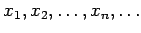
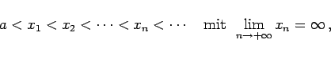
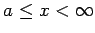

Inhalt Index DeskTop Bronstein

 Integralrechnung Bestimmte Integrale Uneigentliche Integrale, Stieltjes- und Lebesgue-Integrale Integrale mit unendlichen Integrationsgrenzen
Integralrechnung Bestimmte Integrale Uneigentliche Integrale, Stieltjes- und Lebesgue-Integrale Integrale mit unendlichen Integrationsgrenzen


Wenn  eine beliebige, unbegrenzt wachsende unendliche Folge ist, d.h. wenn gilt
|  | (8.84a) |
und wenn die Funktion f(x) positiv für  ist, dann kann die Frage nach der Konvergenz des Integrals (8.77) auf die Frage nach der Konvergenz der Reihe
zurückgeführt werden. Wenn die Reihe (8.84b) konvergiert, dann konvergiert auch das Integral (8.77) und es ist dann gleich der Summe der Reihe (8.84b). Divergiert die Reihe (8.84b), dann divergiert auch das Integral (8.77). Somit können die Konvergenzkriterien für Reihen auch zur Konvergenzuntersuchung von Integralen eingesetzt werden. Beim Integralkriterium für Reihen wird umgekehrt die Konvergenzuntersuchung der Reihen auf die Untersuchung der Konvergenz eines uneigentlichen Integrals zurückgeführt.